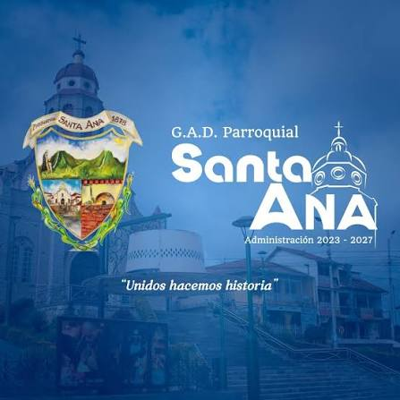

SANTA ANA
La parroquia rural Santa Ana, ubicada en el cantón Cuenca (Ecuador), fue reconocida oficialmente como parroquia civil el 27 de mayo de 1878 y como parroquia eclesiástica el 17 de junio de 1907
Tierra de pan y hornos de leña: Santa Ana es ampliamente famosa por conservar la tradición del pan artesanal horneado en leña (como el tradicional pan de la raya), un atractivo cultural e histórico que deleitó por generaciones a viajeros y vecinos de zonas cercanas
